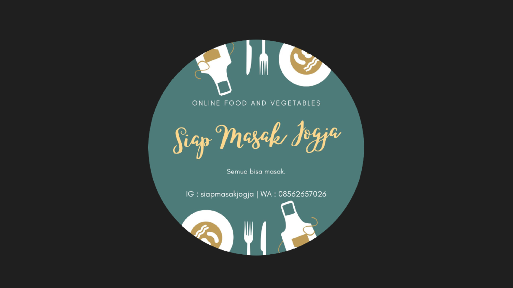
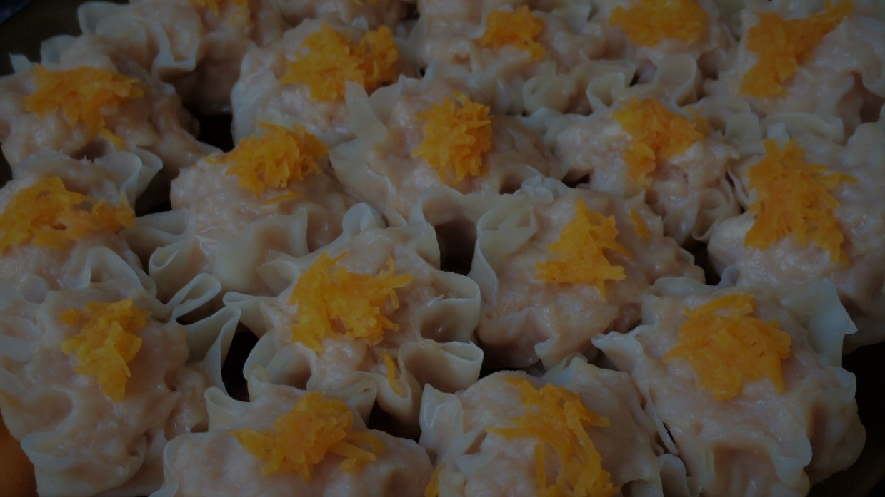
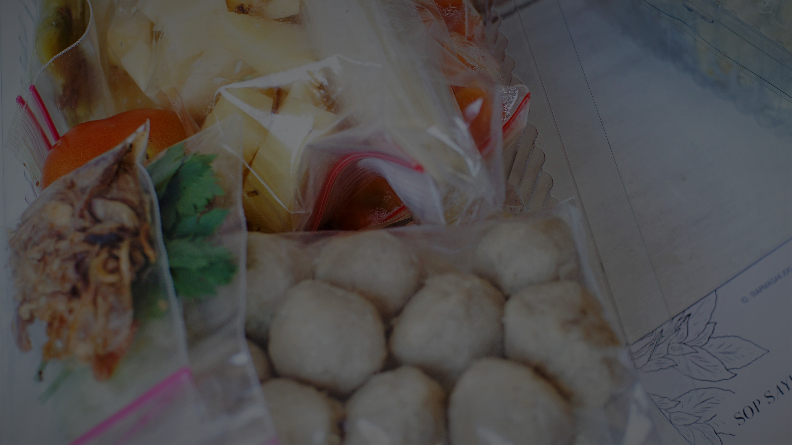

" Siap Masak Jogja "


Siap Masak Jogja
merupakan bisnis start up dibidang kuliner/catering yang di bentuk untuk memudahkan kawula yang ingin memasak tanpa harus ribet untuk berbelanja keluar rumah
